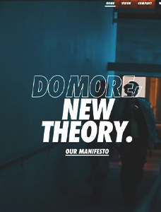
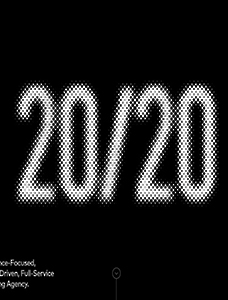
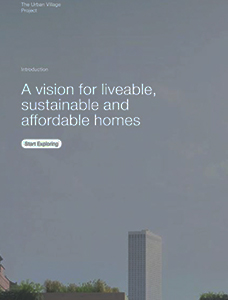
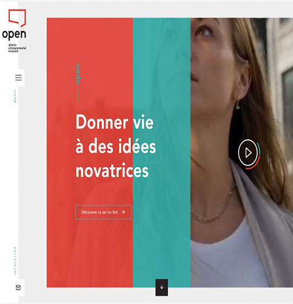
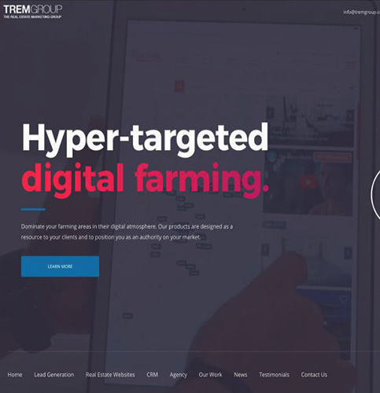
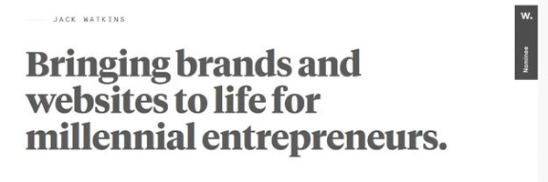

ALL ABOUT TYPOGRAPHY
Modern Typography Trends
Typograhy has evolved over the year, and after going through all the history and it's importance in different eras, lets look at some cool trends in typography especially considereng webdesign in forefront of our minds.
Outline Fonts
Outline fonts are a big deal. You’ll find this trend mostly in the hero area of webpages for the main copy. While uses vary somewhat there are a few elements that you’ll find almost every time: Sans serif typeface All caps text for outline letters Paired with filled lettering Oversized text elements
Outline font options can be a lot of fun to use. You just have to be cautious when it comes to readability. Letters can get lost in background images and videos quickly. So take care with color, contrast, and placement. And don’t overdo it. An outline font works best for a point of emphasis, not to create your entire message.
Glitchy Text
The influence of TikTok has moved to typography as well, with glitchy effects trending in type design. And while glitchy effects can be fun, they are quite tricky to use well. Most glitchy text is designed more as an art element than a readable one. And for good reason, glitches in typography can cause readability issues. That being said, this trend is a lot of fun and you can deploy it in a variety of ways. Click through the example above and you can see multiple uses of glitchy text just in the hero
Left Alignment
Left-aligned text is readable, elegant, and can create an off-center balance that has a classic feel. The trick to using left-aligned typography is to pay attention to line breaks and the size of the text. Think about the entire text element as a single element. More lines of text and more words will feel bigger than a couple of words. Adjust size and line-spacing accordingly. For an even more consistent feel, consider aligning other elements to the left as well. Create a grid “margin” for elements to rest, such as the example above from The Urban Village Project. Note the brand name, two levels of text, and a call to action button are all left-aligned on the same invisible plane.
Rounded Sans Serifs
This is a trend that pretty much anyone can use and it’s so simple you might not even see it until you start looking. Projects are packed with rounded, simple sans serif typefaces. What’s great about this trend is that it works with everything. Rounded sans serifs are among the most readable typefaces. Most designers using this trend are also using fonts with medium to thick uniform strokes with adequate letterspacing as well. Everything about this typography trend is centered on optimum readability. Plus, you can pair it with other typography trends for an even more modern look. The example above uses both rounded sans serifs and left-aligned text.
Subtle Gradients
Designers just can’t seem to get enough of gradients. (I’ll admit to being one of them!) Subtle gradients as an accent in typography are the next evolution of this trend. What’s nice about the trend is that gradients are so subtle that you might not even see them at first. There’s just a slight variance in the color that helps pull the eye across lettering. Gradients are best used with thicker typefaces and to accent specific words or phrases. Be careful not to overdo it too much. A good text gradient maintains consistent contrast across the word so that it’s not jarring to read and so that it stands apart from the background.
“Undersized” Hero Type
t’s not that text is trending back toward being small overall, but headlines and text in the hero images of websites don’t have that same oversized feel that overwhelmed some designs. So-called “undersized” typography in the hero area of websites is a bit refreshing. These type sizes – which are still big enough to denote as headlines, but small enough to include a few lines of text – tend to fall more in the range of 50 to 80 points. (The example above is 60 points for the headline and a mere 23 for the secondary headline.) The key to making smaller typography work is to ensure that you have selected a highly readable font and give it plenty of space. It’s easy to fall into a trap of putting too much text on the screen when it is small. Don’t let it happen to you. Why is typography trending smaller? These sizes are easier to scale while creating more universal experiences across devices. Giant, oversized typography can make a mess on mobile, which orients differently than desktop screens. The result is type that doesn’t always look great or having to make design choices that impact the consistency across devices. Just dropping the size a bit can solve this problem, maintains readability and still looks great when done well.
Serifs
Serifs are back. Once deemed “hard to read online,” typography with tiny extra strokes on characters is popping up everywhere. And by the way, that readability issue with serifs online is a total myth. If you want to use serifs for web projects, look for lettering styles that have regular to thicker strokes and pay attention to line spacing when it comes to ascenders, descenders and serifs or ligatures so that every word is easy to understand. From simple square serifs, such as in the example above, to more elaborate flourishes, this typography style has so much character and charm. It can add a nice boost to simple design outlines and those that use space well.
